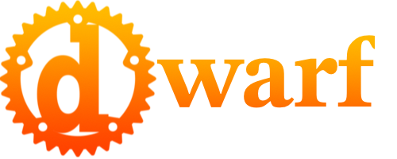
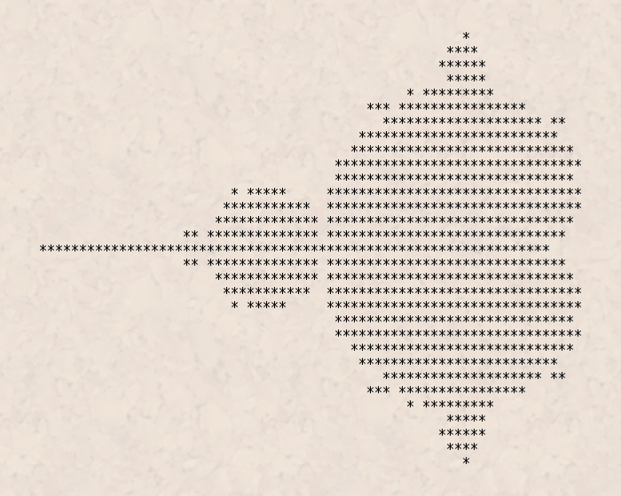

Introduction
Welcome! This brief introduction will outline the status of dwarf, and set the stage for what's to come.
Hello World
Every language deserves one, so let's get it out of the way. Go ahead and click the run button in the top right corner.
fn main() { let name = "World"; print("Hello " + name + "!"); }
Feel free to edit the code — replace World with your name maybe?
I know you want to. 😀
A brief story of dwarf
Dwarf started life as a DSLfor another project. I've had so much fun with it, I want to see if anyone else might find it generally useful. Not that it's quite ready for production. This is still very much alpha software.
Because dwarf is a DSL, the focus was not language design. I'm pretty sure if I had allowed myself that freedom that I'd still be working on it. And it would be weird...
So I based it on Rust. It shares most of it's syntax with Rust, while mostly maintaining the behavior of other interpreted languages. The one big exception is that dwarf is typed, like Rust.
That said, there is a lot missing. Traits for example are not to be found. Neither are there generics, or iterator adaptors. Enums are also a glaring absence. Some of these are missing only because I wanted to get this out the door. Others, like traits, may not have a place, and they may. It's all very unclear at this point, and will likely depend on demand. Other's, and those of my needs.
Right now dwarf is also very slow. (He's still working on his tunneling gear apparently.) It's slow because it's interpreted, and the foundations of the interpreter are not really built for speed. That said, there is a VM currently in the works, and it's somewhat integrated with the interpreter.
This integration is currently taking the form of compiled functions that the interpreter can call to speed things up. I've done that with the Mandelbrot example. There is also work underway for including inline assembly in dwarf files. Of course that will not be necessary once I've finished the VM.and it' compiler.
Along the way I wrote a "debugger" and a REPL. The debugger is very basic. You have to set debugger statements in your code to get it to stop — there is no way to set a breakpoint form the tool. Once the program has stopped single stepping through the code is possible. There is also a "run" button to start it going again.
I began work on a DAP for VSCode (and others), but the documentation on the wire protocol is not easy to find. I put this on the shelf in favor of just publishing something a little more polished.
The REPL is really nice for playing around with the language. It's also a great way to prototype ideas.
So, thanks for taking a look, I hope you enjoy what you find!
A note regarding the code in this book:
The code snippets contained herein are executed by AWS Lambda. I've mentioned elsewhere that the interpreter is not fast. Running as a lambda, it's even not faster... er, slower. 😎
Language Walkthrough
This walkthrough is organized as "nuggets" of information. The order is somewhat arbitrary, and flows from general, need-to-know concepts and builds upon them.
Golden Nuggets ⭐️🌟✨
-
The interpreter is called ChaCha, but the binary is called
dwarf. Go figure. -
I call input files
.tao, I don't remember why. None of the tooling cares what you name them. -
The interpreter looks for a
mainfunction, where it will begin execution.
fn main() { print("Hello, world!\n"); }
Passing command line arguments to main from the interpreter is supported.
- In dwarf, just about everything is an expression.
The only thing that is not an expression is a
letstatement. That's not true. Items inside blocks are also statements. So that's only two things that I can think of. Putting a semicolon at the end of an expression makes it a statement, but it's still an expression underneath. This is super powerful, and allows for some really cool things.
Mandelbrot Set
I imagine that everyone is faimilar with the Mandelbrot set.
It's a fractal that is generated by iterating a function over the complex plane.
It makes really nifty pictures.
 .
.
Doing this in dwarf is not as pretty, as dwarf can only output to the terminal using the print expression.
So ours is going to end up looking more like the first-ever image of the set:
.
The function that we'll be iterating to draw the set is really simple: \(f(z) = z^2 + c\), where \(z\) and \(c\) are both complex numbers. Basically, you fall within the set if \(z\) does not go to \(\infty\) when you iterate the function.
I mentioned that the set is over the complex plane, and dwarf doesn't grok ((i: complex numbers}}. That means that we'll need to invent our own complex type. As per above, we'll need to support addition and squaring. So, let's get started!
Coding a Complex Type
Complex numbers are really just a tuple of two floats.
One element is the real part of the number, and the other is the imaginary part.
The real part is plotted along the x-axis, and the imaginary part is plotted along the y-axis.
Addition and subtraction are defined as you would expect: perform the operation on the real and imaginary parts independently, e.g.: \((a, m) + (b, n) = (a + b, m + n)\). To multiply two complex numbers, one must refer back to multiplying two binomials: \((a + bi)(c + di) = ac + adi + bci + bdi^2\). But don't get caught up in the math — it's not on the test.
Defining the Type
dwarf doesn't have tuples (yet) so we'll use structs like so:
#fn main() { struct Complex { re: float, im: float, } }
This is how we declare a user defined type in dwarf. It's the keyword struct followed by the name of the type, and then a block of fields. Each field in the block is a name followed by a type, separated by a colon. Each field is separated from another by a comma. Trailing commas are just fine.
In this specific case we have a struct called Complex that has two fields, each of type float.
The first is called re, and the second, im.
Initializiation of a struct is done by a struct expression, just like Rust. if you are unfamiliar, a struct expression looks like the definition, but with values in place of types.
struct Complex { re: float, im: float, } fn main() { let z = Complex { re: 1.23, im: 4.56, }; chacha::assert_eq(z.re, 1.23); chacha::assert_eq(z.im, 4.56); }
The last two lines are functions provided by the runtime ChaCha.
chach::assert_eq tests it's arguments for equality, and throws an error if they are not.
Complex Methods
Having a type is a good start. We can now create Complex numbers
Addition is fairly straightforward:
#fn main() { struct Complex { re: float, im: float, } impl Complex { fn add(self, other: Complex) { self.re = self.re + other.re; self.im = self.im + other.im; } } }
This is an impl block. Functions that belong to the struct go into the impl block.
Similarly, the square function is not too bad:
#fn main() { struct Complex { re: float, im: float, } impl Complex { fn square(self) { self.re = self.re * self.re - self.im * self.im; self.im = 2.0 * self.re * self.im; } } }
Earlier I said that you know if you are in the set if you don't go to infinity and beyond. We don't have that much time, and there's a shortcut. While we are iterating, we can just check the absolute value of the complex number. If it is greater than 2 then we know that the number will go to infinity. When that happens we know that we are not in the set.
Rather than check the absolute value, we can just check of the value is greater than 4. The problem of course is that 4 is a scalar, and we are dealing with complex numbers. The solution is to take the norm, or dot product of the complex number.
#fn main() { struct Complex { re: float, im: float, } impl Complex { fn norm(self) -> float { self.re * self.re + self.im * self.im } } }
There is something worth noting in the last function. We are returning a float, but there is no return statement. Just like in Rust, the last expression in a block is the the value of the block.
We'll need to be able to create the Complex number "0". We can do that with a static method. Static methods are functions that belong to the type, rather than an instance of the type. Practically that means that the function does not take a self parameter.
struct Complex { re: float, im: float, } impl Complex { fn zero() -> Complex { Complex { re: 0.0, im: 0.0, } } } fn main() { let zero = Complex::zero(); chacha::assert_eq(zero.re, 0.0); chacha::assert_eq(zero.im, 0.0); }
Rendering the Set
struct Complex { re: float, im: float, } impl Complex { fn zero() -> Complex { Complex { re: 0.0, im: 0.0 } } fn add(self, other: Complex) -> Complex { Complex { re: self.re + other.re, im: self.im + other.im, } } fn add_2(self, other: Complex) { self.re = self.re + other.re; self.im = self.im + other.im; } fn square(self) -> Complex { Complex { re: self.re * self.re - self.im * self.im, im: 2.0 * self.re * self.im, } } fn square_2(self) { let re = self.re * self.re - self.im * self.im; self.im = 2.0 * self.re * self.im; self.re = re; } fn norm_squared(self) -> float { self.re * self.re + self.im * self.im } } fn pixel_to_point( width: int, height: int, pixel_x: int, pixel_y: int, upper_left: Complex, lower_right: Complex, ) -> Complex { let w = lower_right.re - upper_left.re; let h = upper_left.im - lower_right.im; Complex { re: upper_left.re + pixel_x as float * w / width as float, im: upper_left.im - pixel_y as float * h / height as float, } } fn escape_time(c: Complex, limit: int) -> Option<int> { // debugger; let z = Complex::zero(); for i in 1..limit { ComplexEx::square(z); ComplexEx::add(z, c); let foo = ComplexEx::norm_squared(z); if foo > 4.0 { return i; } } 0 } fn main() -> Complex { let ty = chacha::typeof("mandelbrot"); print("Type: " + ty + "\n"); let time = chacha::time(plot); print("Total time: " + time as string + "\n"); } fn plot() -> Complex { let width = 42; let height = 10; let upper_left = Complex { re: -2.5, im: 1.0 }; let lower_right = Complex { re: 2.0, im: -1.0 }; // for t in 0..255 { let t = 50; for row in 0..height { // OMG, this is an ugly hack, and yet it's so badass. If it had worked. 😢 // ChaCha::spawn(do_column, [row, width, height, upper_left, lower_right]); // if row > 1 { // debugger; // } do_column(t, row, width, height, upper_left, lower_right); } // This is busted too. // print(chacha::eps() + "\n"); // } print(chacha::eps()); print("\n"); } fn do_column(time: int, row: int, width: int, height: int, upper_left: Complex, lower_right: Complex) { for column in 0..width { let point = pixel_to_point(width, height, column, row, upper_left, lower_right); let time = escape_time(point, time); if time > 0 { print(" "); } else { print("*"); } } print("\n"); }
Statements
dwarf, like Rust uses only a handful statements.
Let Statement
The let statement is used to assign a value to a variable.
#fn main() { let x = 42; }
Expression Statement
Result Statement
#fn main() { fn empty() -> () { 42; } fn value() -> int { 42 } print(empty()); print(value()); print({}); print({42}); }
Item Statement
fn main() -> () { // This is aa item statement. // Note the lack of a semicolon. struct Point { x: float, y: float, } // This is also an item statement. fn foo() -> Point { Point { x: 42.0, y: -3.14 } } // Technically this is a statement, but `print` is an expression. print(foo()); }
Expressions
Here's we'll finally get to the mighty if expression.
Literal Expressions
Unary Expressions
Binary Expressions
Equality
The equals operator (==) tests two expressions for equality and returns a bool.
fn main() { print(1 == 1); // true print(1 == 2); // false }
Equality is a tricky thing. There is reference equality, and value equality. I've taken the perspective that if you can point to two different things, even if they are identical, they are still two different things. This is reference equality.
Equality is transitive. There is exactly one
unique representation of 1in the language, and in the CPU. That is why the following works.fn main() { let a = 1; let b = 1; print(a == b); // true }struct Foo {} struct Bar { bar: int } fn main() { let a = Foo {}; let b = Foo {}; let e = b; print(e == b); // ~~~false~~~ *true* let c = 1; let d = c; print(a == b); // ~~false~~ *true* print(c == d); // true? false? *true*! let f = Bar { bar: 1 }; let g = Bar { bar: 1 }; let h = f; print(h == f); // true print(f == g); // true? false? *true*! f.bar = 2; print(f == g); // true? false? *false*! print(h == f); // true? false? *true*! }That said, it's a matter of perspective. ChaCha knows about references, but dwarf does not.
Built-in Types
dwarf contains a handful of primitive types.
String
The string type is esentially a wrapper for Rust's String type.
That is to say that it is a proper unicode string, encoded as UTF-8.
#fn main() { let s = "Hello, world!🎉💥"; print(s + "\n"); // Strings are also iterable. for c in s { print(c + "\n"); } }
User-defined Types
ChaCha Runtime Reference
The interpreter is started via the dwarf binary:
Usage: dwarf [OPTIONS] [SOURCE] [-- <ARGS>...]
Arguments:
[SOURCE]
Dwarf Source File
Path to the source file to execute.
[ARGS]...
Dwarf main arguments
These argumnets are passed on to the dwarf `main` function.
Options:
-d, --dap
Debug Adapter Protocol (DAP) Backend
Enable the DAP backend. This will start a TCP server on port 4711.
-r, --repl
Post-execution behavior
Drop into the REPL after executing the source file.
-b, --banner
Print the dwarf banner
-h, --help
Print help (see a summary with '-h')
-V, --version
Print version
args
Command line arguments are made available to a running program as a vector of strings via the chacha::args function:
fn main() { for arg in chacha::args() { print(arg + "\n"); } }
Misfortunately I haven't hacked all the HTTP nonsense necessary to pass command line arguments from here. I might get to it before release.
typeof
This is exactly what it sounds like. Pass a value, and see what type it is:
fn main() { print(chacha::typeof(42)); print(chacha::typeof(42.0)); print(chacha::typeof("42")); print(chacha::typeof(true)); print(chacha::typeof(false)); print(chacha::typeof({})); print(chacha::typeof([0, 1, 2, 3])); print(chacha::typeof(["0", "1", "2", "3"])); print(chacha::typeof(0..100)); // print(chacha::typeof(()) ); // print(chacha::typeof({42, 42.0, "42", true, false})); }
Parser
The problem with parser generators is that you need to understand how a parser works in order to use one. If you don't understand how a parser works, you're going to get confused, and frustrated. The next thing you know parser generators are terrible, evil beasts from the nether depths of the endless turtle Ouroboros. You'll write your own, buggy, hard to maintain parser, or you'll learn how the work, and build a well-behaved parser. In the latter case, you'll then be able to use a parser generator.
So, I couldn't get the evil parser generator to pay attention to my needs.
Index
bool, 1
ChaCha, 1, 2, 3
command line arguments, 1
Complex numbers, 1
equals, see ==
expression, 1, 2
=, 1
==, 1, 2
if, 1
print, 1
struct expression, 1
fractal, 1
Hello World, 1
main, 1
Mandelbrot, 1
Mandelbrot set, 1
Parser, 1
statement, 1
Expression Statement, 1
Item Statement, 1
let, 1, 2, 3
Let Statement, see let
Result Statement, 1
static method, 1
string, 1, 2
struct, 1
tuple, 1
types, 1
float, 1
vector, 1
Postface
I started dwarf on April 6, 2023.
It was meant to be as a DSL for it's parent project sarzak.
I wrote the date down because I wanted to know how long this side-trip took once I was done.
I was concerned that I'd spend too long on it, and I was excited to put it to use.
As you can see, it's all sort of gotten away from me since then.
It's a long way from being done, and I keep adding features.
It's grown far beyond the needs of my DSL, and yet I keep tweaking it.
I guess I'm having fun. 😀
Dwarf looks a lot like Rust — that's on purpose.
You see, I wanted to use sarzak to generate Rust code for dwarf.
Making that work was enough of a mental load.
Adding "programming language design" was more than I needed to deal with.
Like I already mentioned, dwarf is meant to be a DSL, and I plan on hacking on it quite a bit.
The more it looks like, and acts like Rust, the happier a cowboy be me.
Dwarf contains generated code — a lot of it. Counting lines of code is a pretty terrible metric. "Semantic density" varies within a language, and between languages. Should you include comments?
Now that we've established loc is useless, here are some numbers.
As I write this there are (15/2)k (code/comments) loc that I've written myself.
The last time I generated the LuDog/AST-dwarf interface code it was 11k/300.
Each LuDog/AST backend "store" is (9/1.4)k, and I could generate at least five (Rc, (parking_lot | std)::Mutex, (parking_lot | std)::RwLock). 1.
I have no idea what I'll end up actually shipping.
I won't bother to include the generated code upon which the stores depend.
Regardless, there are some metrics to gain insight into the ratio of generated to hand-written code.
The code genarator is called grace, which I began in January 2023.
Dwarf is in fact necessary for me to continue work on grace.
Once I've escaped this recursive rabbit hole, I'll publish the whole mess.
So really, this is an experiment. An exciting, fun, experiment
— Keith Star (June 8, 2023)
After benchmarking the differences between Parking Lot and std, I got to digging. Apparently the std sync stuff was recently updated.